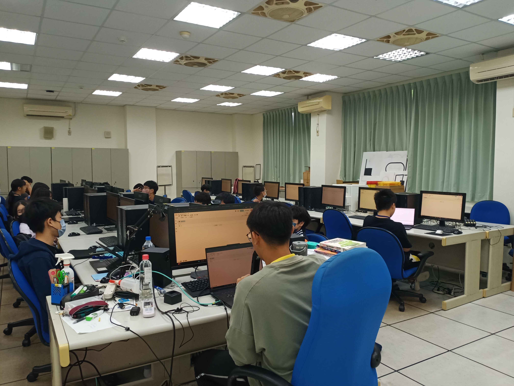
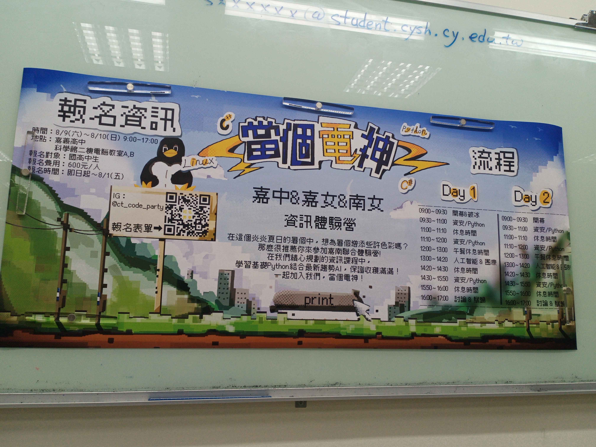
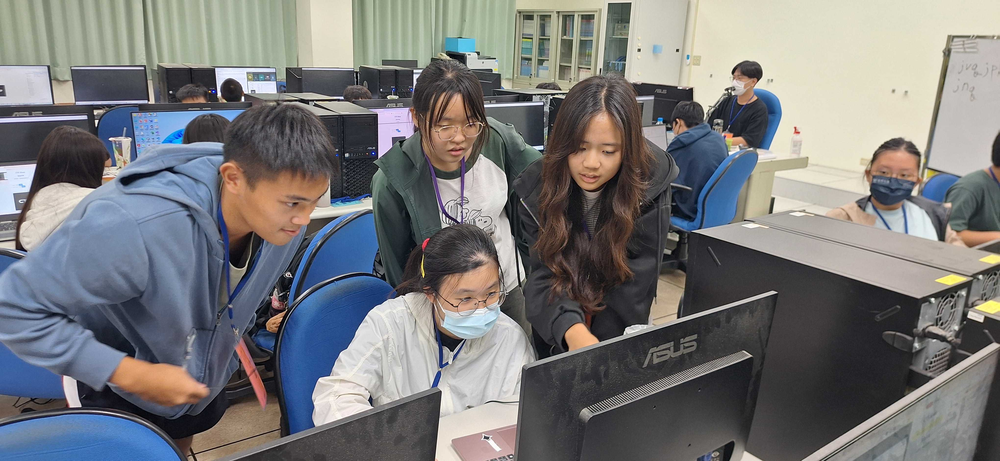
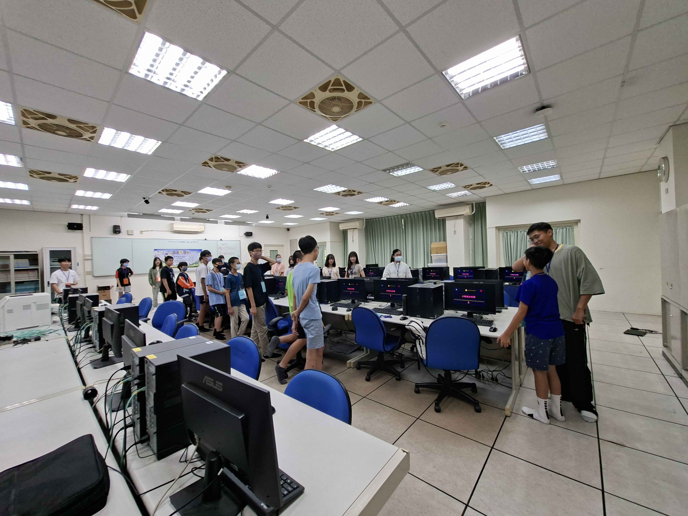

> 南十校資訊社聯合迎新
這個體驗營是我人生中第一個自辦的營隊。籌備過程中雖然遇到了無數困難，甚至到了活動當天清晨，我還緊張到瘋狂跑廁所……，過程中有些錯誤，比如備課不完全、或者是活動流程不順等等 但當活動正式開始，看到學員們展現的熱情、工作人員積極各司其職的模樣，那瞬間我覺得一切的熬夜和汗水都值得了！
🤝 特別感謝：
感謝所有學員包容我們的青澀與失誤，也感謝全體工作人員的全力以赴，讓活動能順利進行。同時，也非常感謝嘉義女中資訊研究社、臺南女中資訊研究社兩校的鼎力相助。
這兩天，我真的很開心！！！
感謝所有學員包容我們的青澀與失誤，也感謝全體工作人員的全力以赴，讓活動能順利進行。同時，也非常感謝嘉義女中資訊研究社、臺南女中資訊研究社兩校的鼎力相助。
這兩天，我真的很開心！！！
活動精選照片



